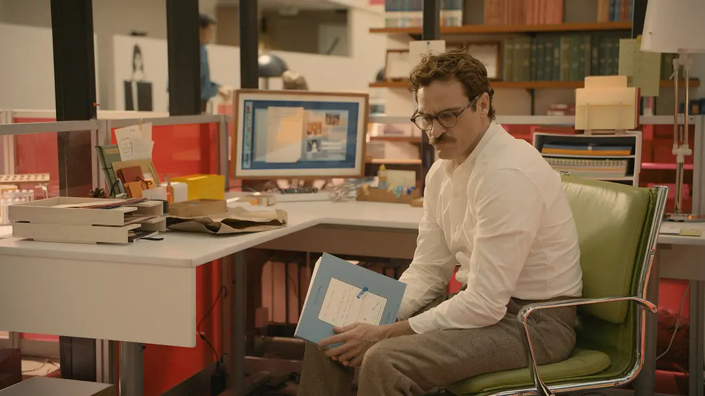
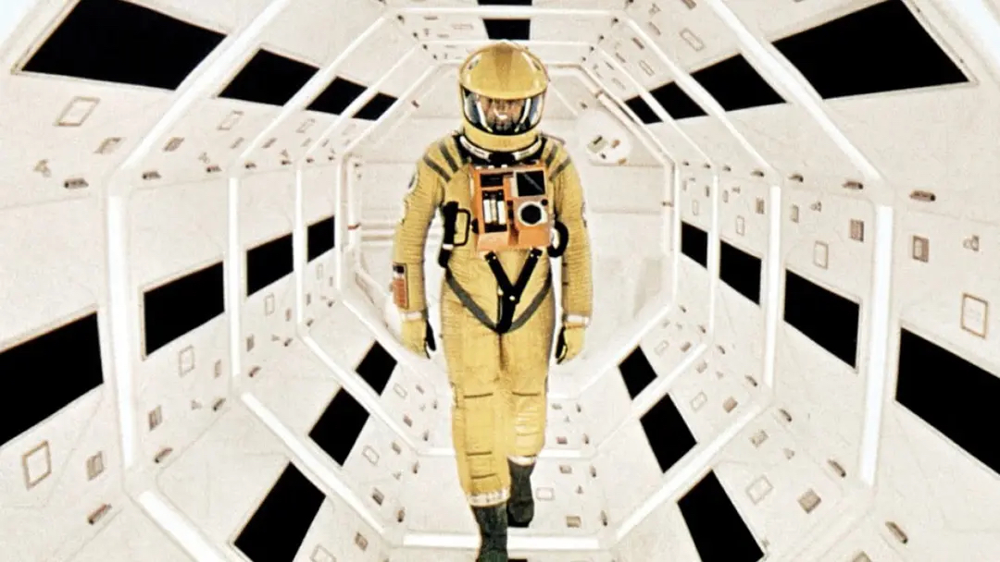
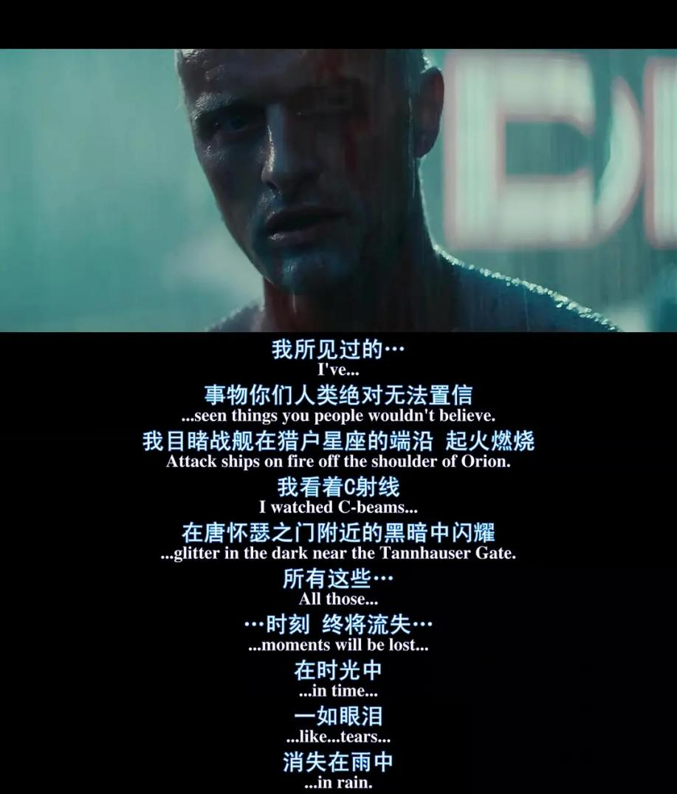

| 剧本创作 | 视频分析和编辑 | 特效制作 |
与人工智能相关的影视剧题材 |
|
|
1.人类与人工智能产生感情  《Her》 《人工智能》
《人工智能》
|
2.人工智能拯救/毁灭世界 |
|
|
1.人类与人工智能产生感情  《2001：太空漫游2001》  《银翼杀手》 |
|
人工智能介入影视剧本创作 |
1.剧本创作前期的智能预测在剧本分析阶段，依赖于大数据挖掘的“人工智能+自然语言”处理技术能对剧本内容自动识别、拆解、实现剧本分析自动化完成，提高评价内容。 （EX：2017年迪士尼团队创建了一种可以模拟文本区域，以及各区域间相互依赖关系的人工神经网络，以社交媒体内容的点赞数作为评价叙事质量的方法。） |
2.剧本创作过程中的智能预测人工智能技术可以有效获得观众喜好，参与度等市场预测数据指导优化影视内容创作。 （EX：电视剧《雷霆战将》因其不合理的剧情与设计被人民日报点名批评并紧急下架。智能预测可以帮助影视剧在上映播出之前获得观众真实反应数据，通过制作优化降低观众厌恶度，提高喜好度，有效规避下架风险减少损失。） |
by贺楚涵，邓力榕，黄红 |